SerenityOS: The second year
Best viewed in 1024x768 with the SerenityOS Browser!
(jk it works everywhere)
Hello friends!
Today is the second birthday of SerenityOS,
counting from the
first commit
in the git repository,
on October 10, 2018.
Previous birthdays: 1st.
NOTE: Since the HTML and CSS support has improved over the last
year, this page uses a bit more of them to showcase SerenityOS browser
support. :^)
Introduction to SerenityOS
SerenityOS is a from-scratch desktop operating system that combines
a Unix-like core with the look&feel of 1990s productivity software.
It's written in modern C++ and goes all the way from kernel to web browser.
The project aims to build everything in-house instead of relying on
third-party libraries.
I started building this system after
finishing a 3-month rehabilitation program for drug addiction
in 2018. I found myself with a lot of time and nothing to spend it on.
So I began building something I'd always wanted to build: my very own dream OS.
Parts of my development work is presented in screencast format on
my YouTube channel.
I also post monthly update videos showcasing new features there.
Snapshots from year 2 of development
Anyways, let's continue looking at screenshots where we left off
in last year's birthday celebration!
We had just gotten the browser strong enough to display the first
birthday celebration page..
2019-10-31: :hover selectors in the Browser
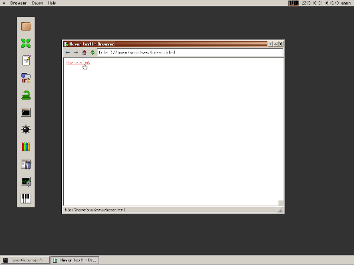
I remember first seeing links change color when hovered back
in the IE3 days, and thinking it was the coolest thing ever.
2019-11-04: Ladies and gentlemen, we've got Quake!
Jesse ported Quake to Serenity. We didn't have sound at
first but that was fixed later. Still, it was very exciting!
2019-11-30: Playing with "find in files" in the HackStudio IDE
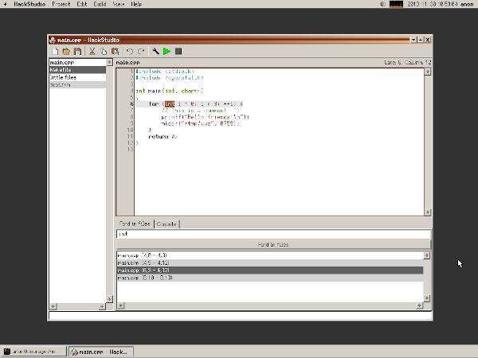
I decided to start building an IDE for C++ development.
Since SerenityOS is a programmer's OS, a capable development
environment is a must-have.
2019-12-08: Ported the nesalizer NES emulator (with sound support, too!)
Getting a NES emulator running helped drive improvements for
threading and timing APIs in the kernel.
Check out the video to see me die before even reaching the 1st palace..
2019-12-30: SerenityOS was hacked in a 36c3 CTF
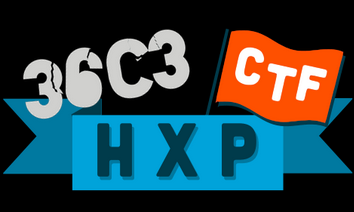
Someone put together a CTF (Capture The Flag) challenge at the
36c3 computer security conference. I learned about this when
two exploits showed up (complete with write-ups!) on GitHub:
one from Fire30 and another one from braindead.
This caught me by total surprise and I was a little bit disappointed
at how easy it was to break into the system. This event sent me down
a deep rabbit hole of learning about system security and applying
everything I learned to secure Serenity. I wanted to make sure that
the next CTF presented more of a challenge!
2020-01-12: I ported the game VVVVVVV to Serenity
After the classic platformer VVVVVV was released as open-source,
I wanted to get it running on Serenity. It was pretty easy
to get it going since it used SDL and we already had a decent SDL port.
The game was open sourced on Jan 10th and I had it running 2 days later.
2020-01-31: pledge() and unveil() all the things
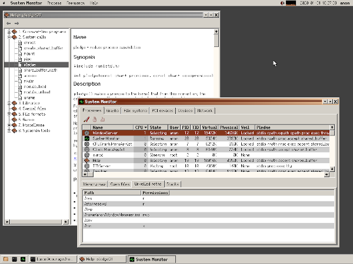
Outside of enabling every protection mechanism the x86 has to offer,
there was also a fair amount of architectural Unix-level security
work. One of the most important pieces was adopting two OpenBSD-like
system calls: pledge() and unveil().
I wrote about Serenity's pledge and unveil implementation on my blog.
2020-02-22: Kernel symbols in the Profiler

The system's built-in time profiler became a lot more helpful when
we added symbolication of kernel stack frames. You can tell them apart
from userspace frames by the little red icon in the graph!
2020-02-29: A simple built-in web server
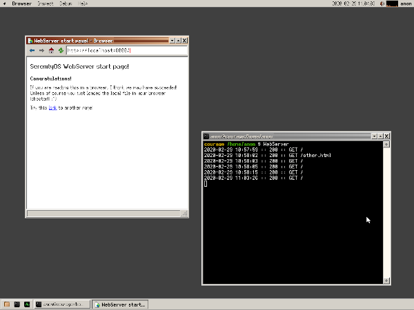
For my own birthday (February 9th), I celebrated by building a simple
HTTP server for Serenity. I always loved the simple HTTP server that
comes with Python, and I wanted something similar for Serenity.
2020-03-31: The JavaScript explosion
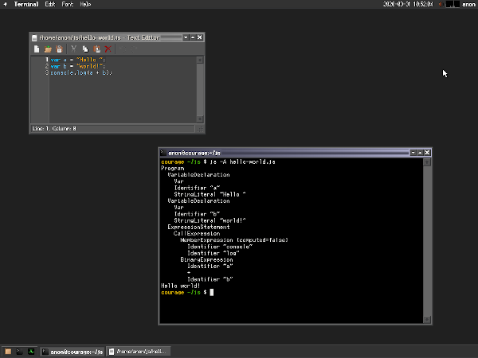
People kept asking me if the web browser would ever support JavaScript.
I honestly felt a bit intimidated when starting this project but I just
did it anyway, and a whole bunch of people very quickly joined up to
help out.
I started by implementing a simple AST interpreter,
and building some test AST's by hand. Then Stephan added a parser, and Sergey made a REPL,
and then things really took off, with Linus and Matt going especially deep.
2020-05-28: Changing the LICENSE (a tiny bit)
To celebrate the project reaching 10'000 commits, I updated the main license file
to assign copyright to "the SerenityOS developers" instead of just myself.
2020-05-30: Accessing more of the web with TLS (and HTTPS)
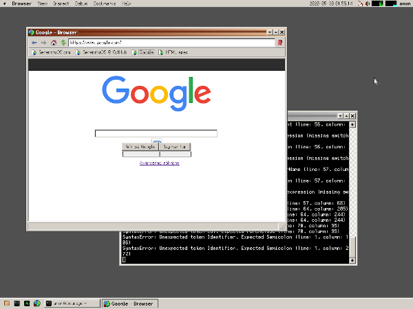
Browser development was moving forward with the LibJS engine allowing
more and more complex things. But we were still limited to visiting unencrypted
websites served over HTTP.
In comes LibTLS and LibCrypto! Thanks to some amazing work by Ali, assisted by
Itamar and DexesTTP, we can now talk to HTTPS websites as well. The whole world
opens up!
I was super excited when I could get Google loading for the first time!
2020-06-22: Our very own JPEG decoder
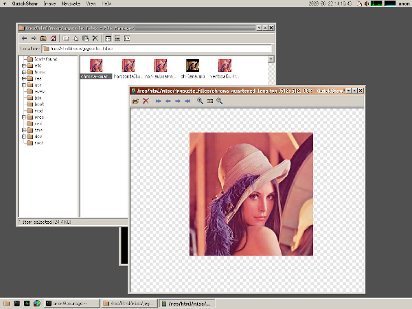
Devashish implemented a JPEG decoder for LibGfx and suddenly we had access
to a world of photos!
2020-06-30: Working on ACID2 compliance test fixes
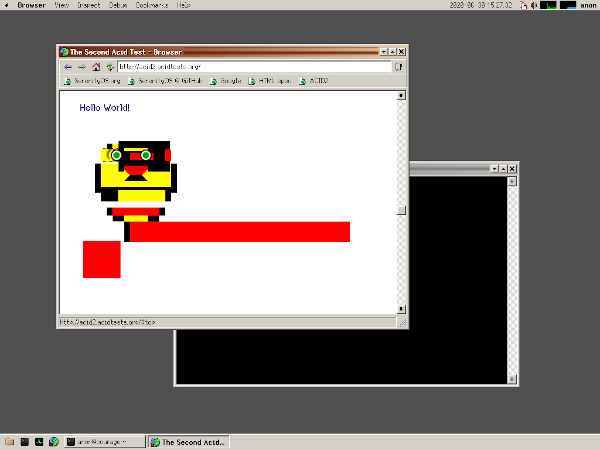
I spent a whole bunch of time improving standards compliance in the
LibWeb engine's CSS implementation.
I've been using the classic ACID2 test
to drive some of the work. As you can see from the picture, a lot of work
still remains!
2020-07-27: Catching memory errors with a userspace emulator
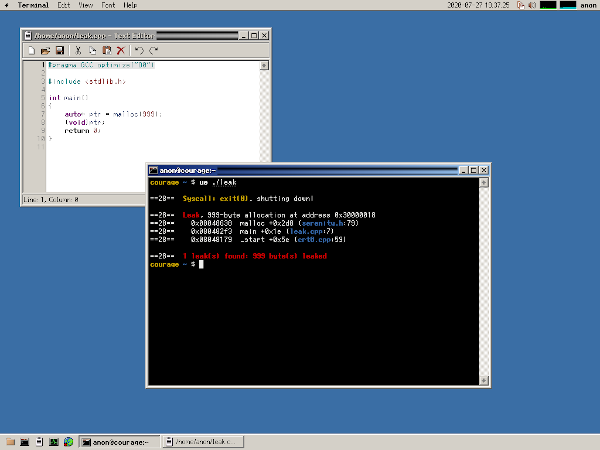
One tool I've missed ever since starting the SerenityOS project is the amazing
Valgrind.
I finally decided to do something about it, and I was curious how such a thing might
be implemented, so I set out to create a workalike of my own.
I've hacked on x86 emulators in the past, so I decided to bring my knowledge in that
area into Serenity and started building UserspaceEmulator (or UE for short), a program
that implements a ring-3-only x86 CPU and intercepts system calls so we can instrument them.
Within a couple of weeks of hacking, I could run compiled programs without changing
anything about them, and catch memory leaks just like Valgrind would!
2020-08-30: More desktop games! (Chess and 2048)

I've always been a fan of desktop games, ever since the days of the
Microsoft Entertainment Pack.
Here we were joined by two great games, a 2048 clone by Ali & Sergey,
and a Chess game by Peter. The chess engine is still pleasantly stupid,
so I can even beat it myself!
Also of note: the awesome icons in the system menu! Many of them were
drawn by thankyouverycool (so thank you, thankyouverycool, very cool!)
Even more: the "About" box was redesigned by Nick, and Buggie the system
mascot was drawn by Simon! These things happened much earlier but I'm
mentioning them here since they are visible in the screenshot.
2020-09-22: Git integration in the HackStudio IDE

Itamar started adding support for Git integration (diffing, staging, commits)
to the HackStudio IDE.
Note that this is an optional feature that is only available if you have the
git port installed. HackStudio is the only program in the system
that makes use of ports since we don't have our own implementations of
git, a compiler, or a linker... yet. :^)
2020-09-29: Playing with the Spreadsheet application
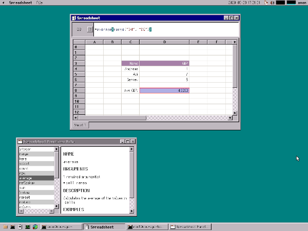
The Spreadsheet app was started by Ali and is powered internally by the
LibJS JavaScript engine. Cell expressions are evaluated as JS.
It feels really neat so far, although we're still figuring out
how it should work.
It even has built-in documentation, which is generated from the JavaScript
source code!
2020-10-03: Copying images between applications!
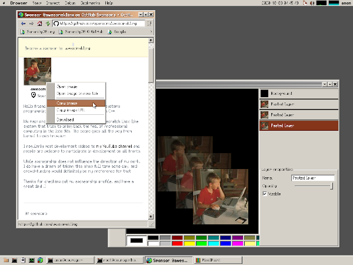
While we've had a system clipboard for a long time, it only recently
became possible to copy anything other than text between apps.
Here I had just added an image context menu in the Browser so you can
copy images from the web directly to the clipboard!
Also on display: the PixelPaint app (formerly PaintBrush), which became
a layer-based image editor in the last year.
2020-10-10: Making this very webpage!
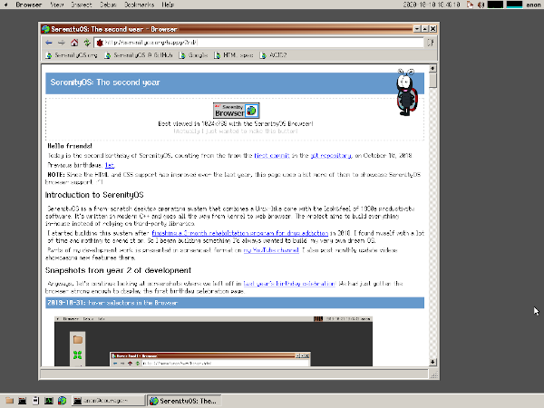
I had to fix some CSS bugs in the LibWeb engine while putting together
this page. I have also discovered a whole bunch of things that need
fixing. But this is where we are right now!
Happy 2nd birthday SerenityOS! I'm so proud of you, and of all the people who have worked on you!
Conclusion
And with that, this little tour of the second year of Serenity is over!
If you would like to see more, I've continued the tradition of making a monthly
round-up video at the end of each month. You can find them in
a special playlist
on my YouTube channel.
Thanks
To all the lovely people have helped out in the last year, with code, bug reports,
man pages, commenting/liking/sharing my videos, sending letters, chilling on IRC,
retweeting my shower thoughts, telling your friends, etc, thank you!
I'm eternally grateful for all the love and support this project gets.
And also, a huge thank you! to everyone who has supported me via
GitHub Sponsors,
Patreon,
and PayPal.
I hope to be able to do this full time some day, and your continued support
is keeping the dream alive!
All right, let's keep pushing forward into year 3!
Andreas Kling, 2020-10-10
GitHub |
YouTube |
Twitter |
Patreon |
PayPal


{kind=link}
{kind=link}
{kind=link}
{kind=link}
{kind=link}
{kind=link}
{kind=link}
{kind=link}
{kind=link}
{kind=link}
{kind=link}
{kind=link}